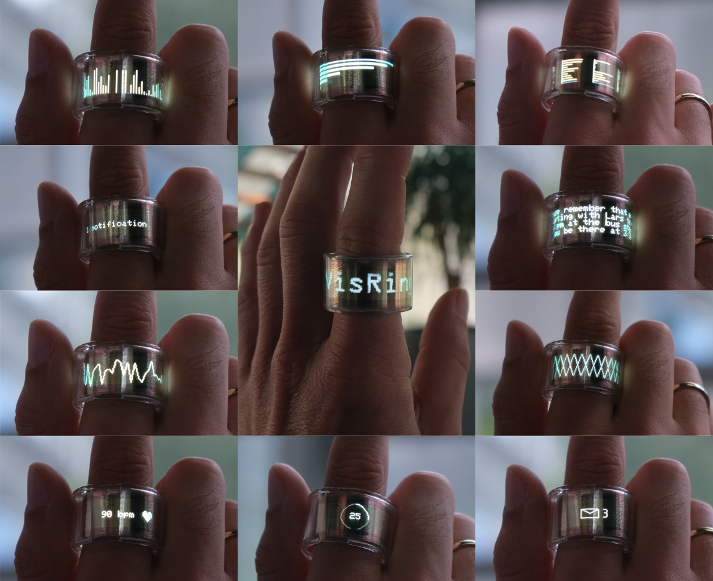
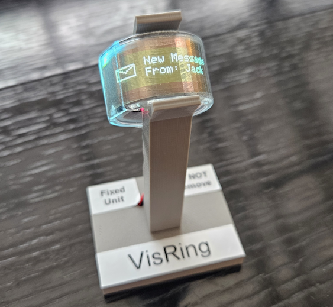
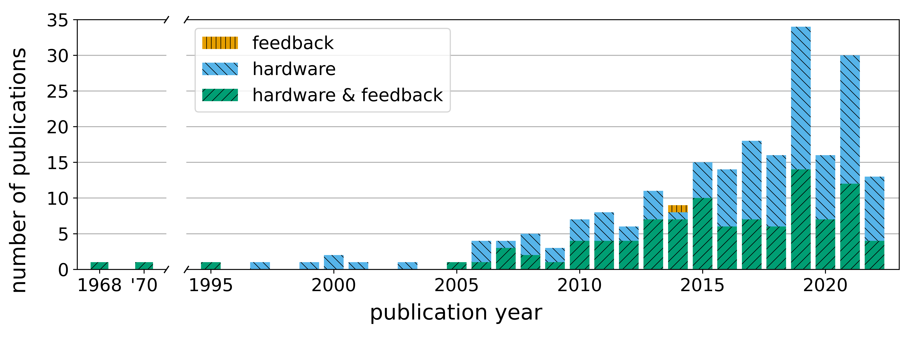
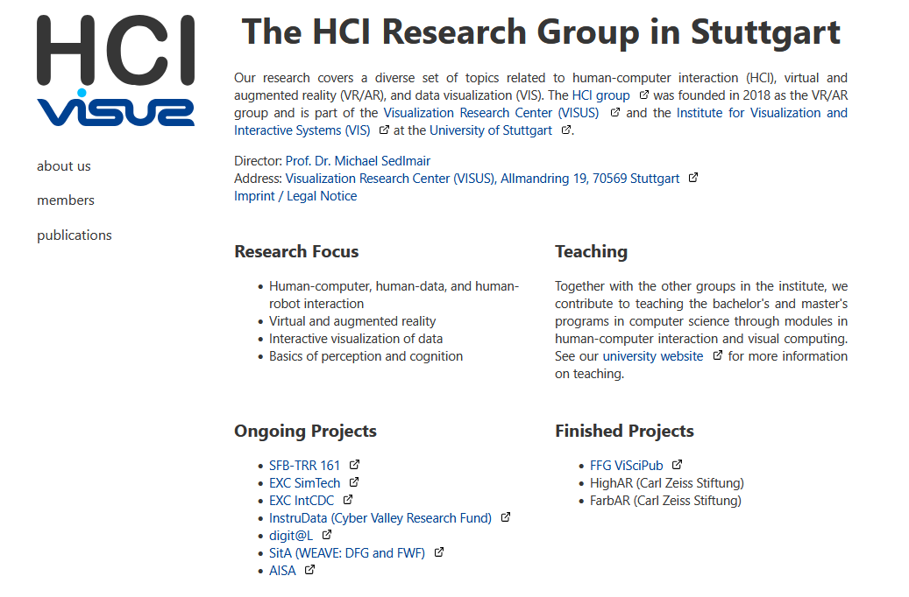
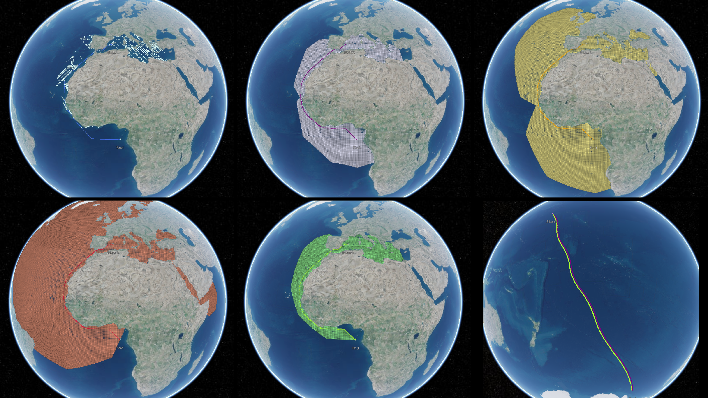
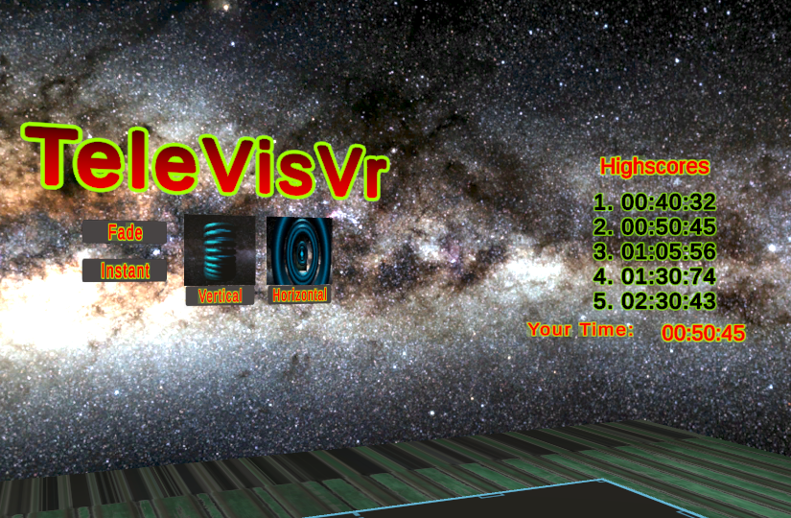

Repositories ChristianKrauter/VisRing  Development code for the VisRing project, as part of our publication VisRing: A Display-Extended Smartring for Nano Visualizations. TaitingLu/VisRing  Hardware designs and files for the VisRing project, as part of our publication VisRing: A Display-Extended Smartring for Nano Visualizations. ChristianKrauter/sitting-posture-review-material  Supplemental material for our CHI 2024 paper Sitting Posture Recognition and Feedback: A Literature Review. visvar/visvar.github.io  Website of the HCI research group at the University of Stuttgart. ChristianKrauter/ChristianKrauter.github.io Source code for this personal website. ChristianKrauter/osm-ocean-pathfinding  Student project exploring pathfinding algorithms for waterways on a global scale. ChristianKrauter/televisvr  Student project exploring teleportation animations through a VR game.